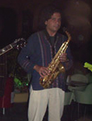
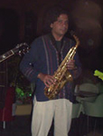

1. CD GUARAPICHE BLUES -
Homenaje a María Rivas
Ozono Jazz y su joroponovo
(2018-2019) Ozono Jazz en versión de
cuarteto. Este disco está dedicado a María Rivas por su
mérito en ser la primera cantante de Venezuela que
despertó la consciencia ecológica en sus conciertos,
quien fuera designada "Madrina de Imparques" en 1992 y
recibiera el Premio Phelps de Ecología en 1993. ¡Bravo
María!, precursora y gran ejemplo para todos nosotros en
Música por la Ecología. Emilio Mendoza
- Guitarra (6 nylon) Juan Lizardo
- Guitarra (12 metal) Manuel Churión
- Bajo, Sitar Lizardo Domínguez - Maracas, Percusión
01. Esperanzas-2015
08. Aguaclara
02. Canción de Cuna
09. Terruño
03. Espirales + Silencio I
10. Evolución
04. Desamores
11. Resplandor
05. Laberinto
12. Añoranza
06. Sol de Mañana
13. Guarapiche Blues
07. Encanto
14. Silencio II
Ozono Jazz y su
joroponovo
El grupo de música ecológica Ozono Jazz,
ahora en formato de cuarteto, desarrolla el tradicional
joropo de los llanos colombo-venezolanos, hacia un nuevo
estilo que se denominó “joroponovo”. Este género inédito
utiliza la técnica de arpegio de la guitarra clásica en
imitación al sonido de las arpas central y llanera, así
como el golpe recio con plectro de la técnica de ejecución
"jalao" particular de la bandola de los llanos del estado
Barinas, Venezuela. El charrasqueo típico así como los
acordes en golpes secos de la mano derecha –técnicas
propias del cuatro venezolano– son adoptados a la guitarra
dentro de un lenguaje fuertemente rítmico de compases
compuestos (12/8 & 6/4), riqueza del joropo
tradicional, pero con una estructura formal propia y
compleja. La guitarra 12 nos ofrece un amplio espectro de
versatilidad sonora y potencial rítmico, con breves paseos
por diversas culturas y el comentario continuo a la
composición en forma de parafraseos. El bajo eléctrico
atrapa como base la complejidad rítmica de sus compañeros
y establece la “onda” de cada parte, actuando muchas veces
como una voz cantante en contrapunteo con la guitarra. El
sello final del joroponovo se corona con la ejecución
virtuosa de las maracas, el rey de los instrumentos
venezolanos. Celebramos nuestro 15º aniversario de
sostenida actividad con una muestra de piezas
emocionalmente intensas y de contraste, en reflejo de
nuestra existencia en un país afectado por una crisis
crónica, donde realizar un disco es sumamente difícil.
Esta vez, resaltamos la pureza de las emociones humanas en
contraste con la sociedad de desechos, basura y ruido que
hemos derramado a nuestro alrededor en la única Tierra
disponible.
Músicos Invitados
María
Rivas
Voz en Guarapiche Blues
Valentina Barreto, Marcy Durán , Pavlova Piía, Rocío
Portal
Coros en Guarapiche Blues
Francisco Issá Saxos en Guarapiche
Blues
Dha
Maharaj
Tablã de la India en Laberinto y Evolución
Ómer
Pérez
Batería en Guarapiche Blues
Estudios de Grabación
a. Jesús Enrique Torres, Estudios Edén, San
Antonio
b. Douglas Lugo, Complejo Cultural Cecilio Acosta,
Los Teques
c. Wilmer Simba, Jaguar House Studios, San Antonio
d. Miguel Chacón, Laboratorio de Música Toronjil,
San Antonio
e. Juan Carlos Yegres, Estudios Humana, Caracas
f. Francisco “Coco” Díaz, Estudios SonoFolk,
México DF
Mezcla y Mastering
Jesús Enrique Torres, Estudios Edén Logotipo Ozono
Ivan Estrada Diseño Gráfico
xxxxxxxxxxx Arreglos
Ozono Jazz - Cuarteto Producción Asociada
Jesús Enrique Torres
Composición, Dirección & Producción Ejecutiva
Emilio Mendoza
Estamos muy agradecidos con:
• La Embajada de la India en Caracas
por su gentil apoyo y la donación del Sitar.
• La Gobernación del Estado Miranda,
Dirección de Cultura, Directora Marisela Valero, por
brindarnos gentilmente su estudio de grabación.
• Pedro Espinoza y María Rivas por su
edición de versos I. y II., en Guarapiche Blues.
• Francisco Angarita y Nelson Jiménez,
por el servicio de transporte a los estudios.
Ozono Jazz en
versión de dúo de guitarras Emilio
Mendoza - Guitarra (6 nylon)
Juan Lizardo -
Guitarra (12 metal)
01. Esperanzas-2015
06. Sol de Mañana
02. Canción de Cuna
07. Encanto
03. Espirales
08. Aguaclara
04. Desamores
09. Terruño
05. Laberinto
10. Resplandor
Grabación
• Wilmer Simba, Jaguar House Studios, San Antonio de
los Altos, septiembre, 2014 • Douglas Lugo,
Complejo Cultural Cecilio Acosta, Los Teques, enero,
2017 • Jesús Enrique Torres,
Estudios Edén, San Antonio de lo Altos,
agosto-diciembre, 2017
3.
CD NATURABs.
físico: Mercadolibre /
US$
físico
&
bajar : /
Bs. bajar : .
(2009,
2012) Ozono
Jazz en versión de diferentes combinaciones instrumentales,
desde dúo hasta septeto.
Los temas musicales del
primer disco NATURA están
concebidos para expresar los pequeños y
grandes elementos de la vida: el sol, la
inmensidad del silencio y oscuridad del
universo, el espacio, aire y nubes, el
viento y agua, fuego y energía, la tierra,
los seres y su progreso, evolución, la
vida y el tiempo eterno. Coincide esta serie de
elementos con la alabanza a la naturaleza
y a su Creador expresada en "El Cántico de
las Criaturas" por San Francisco de Asís,
escrito en 1225, con excepción del último
elemento que para el patrono fue la muerte
y para Ozono es el tiempo eterno, con la
composición "Siempre."
Jesús Eduardo Milano
(Cb) Lerryns Hernádez
(Batería)
Dha
Maharaj (Ulises Farías) (Tablã)
Invitados especiales:
Wladimir
Pérez
Solo de bajo eléctrico en Siempre
Francisco
Díaz
Aplausos en Sol de Mañana, Teclados en Silencio
de Luz
Grabación, pre-edición y pre-mezcla:
Víctor Escalona, Lerryns
Hernández, Jesús Eduardo Milano,
Estudios LunaCreciente,
Caracas
Grabación, edición y mezcla
final:
Francisco Díaz, Estudios
Sonofolk, Caracas
Masterización:
Francisco Díaz, Estudios Sonofolk, Caracas Diseño gráfico:
Ivan Estrada, Caracas Fotografía:
Emigdio Simanca, Otilia Rosas
Imagen fondo:
José (Cerro) Mijares Impresión:
CD Systems, C.A., fabricado en Colombia Producción y Dirección:
Emilio Mendoza Agradecimientos:
Decanato de Investigación y Desarrollo, Universidad
Simón Bolívar
Si
aprecia nuestra música y misión,
puede ayudarnos a través de una
donación. BsS:
Banco Mercantil, Cta Corriente:
01050024981024267520, Emilio Mendoza
Guardia C.I. 3186000 US$: Zelle
emiliomen@gmail.com
• Paypal
emiliomen2007@hotmail.com


 



{kind=link}